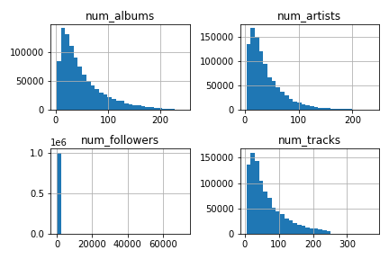
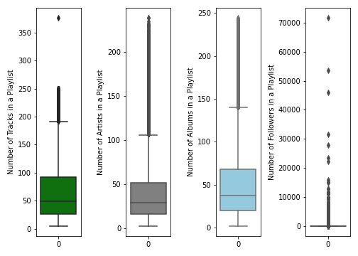
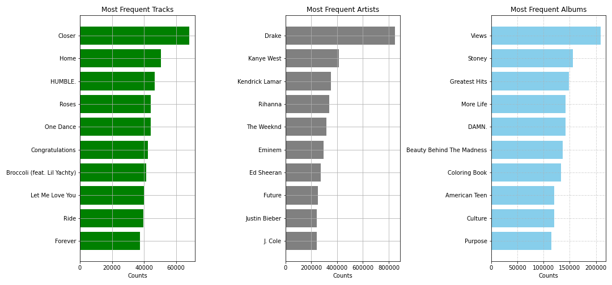
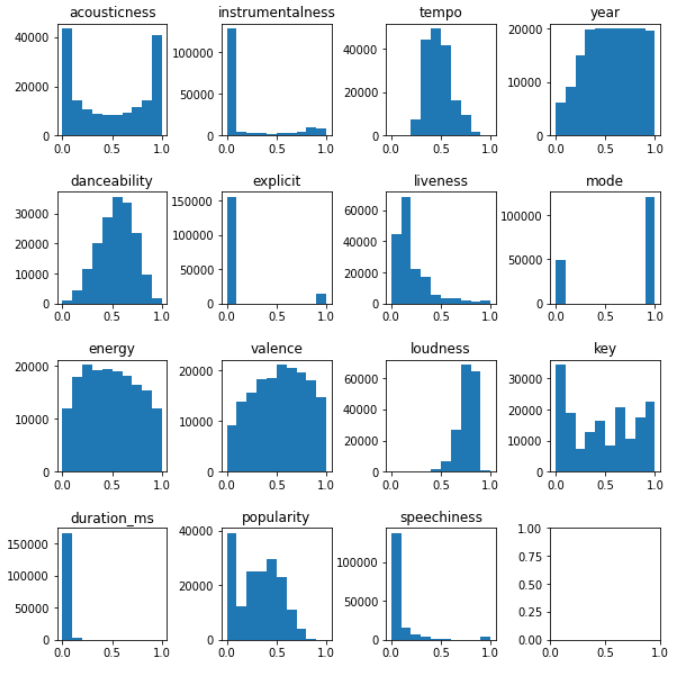

Another programmer and I preprocessed Spotify Million Playsists Dataset (MPD) data, helped with collaborative filtering recommendation algorithm, qualitative evalutations and created the UI design for demo. For this project, I worked with 3 programmers and 1 product manager. The other programmers preprocessed data for 160k Track Dataset (Spotify API) and coded for content-based recommendation algorithm.
While many music recommendation systems already exist in the market, they do not provide much flexibility for the user to customize.
From this project, we took a new and unique approach by implementing a combination of collaborative filtering and content-based filtering algorithms on two different datasets.
Then, we validated the outcome by evaluating with accuracy metrics and comparing to Spotify’s existing system’s outputs. Spotify Recommendation System project was done as the final project of Data Science in the Wild at Cornell Tech.
My Contributions
Duration: 3 months
Programming Language: Python
Design Tool: Figma
My Role: Data Processing, Collaborative Filtering Algorithm, Visual Design, and Prototyping
Background
Most of the existing open-source solutions typically use only one type of approach between collaborative and content-based. Collaborative filtering only approach causes an uneven distribution of data, as popular items get more popular and thus be recommended
even more frequently and less popular items get “drowned out”. On the other hand, the content-based filtering only approach tends to ignore user patterns and social trends. Spotify’s current recommendation system is fully automated
using historical data. It has no consideration for user input, no way to reset user data and start fresh, and no flexibility to “tweak” algorithm if users are unsatisfied with the recs. We combine both approaches to recommend newly
released, still unpopular, music based on existing user patterns and their taste in music. Our solution gives the users the option to input their preferences for better user experience.
Datasets
• Spotify Million Playlists Dataset (MPD) Spotify Million Playlists Dataset contains one million playlists created between 2010 and 2017 by Spotify users in the U.S. The dataset is 33GB, and contains 1,000 JSON files, each consisting of 1,000 playlists. Each playlist
contains:
- Playlist meta-data: id, name, description, # of albums, # of artists, # of tracks, # of followers, duration, etc.
- Track: url, name, artist, album, duration, the position in the playlist, etc.
• 160K Track Dataset (Spotify API) Collected using the Spotify API, this dataset consists of 169,909 songs with release dates between 1921 and 2020. Each song contains:
- Song Description: Song Artist(s), Track ID, Song Name, Genre, Released Date, Released Year, and Song Popularity.
We used pandas to check for any duplicate playlists or null values in the tracks and found that there are none. Besides the tracks, we included some metadata of the playlist for analysis: number of albums, number of artists, number of tracks, and number
of followers. These fields are used to identify the diversity and the popularity of the playlists.

Fig 1: Distributions of Features
From Fig 1, we can see that all these fields have a high peak and a long tail except for the number of followers, suggesting that the dataset is noisy and contains outliers. The following bar plots help us in detecting the quantiles and outliers.
 Fig 2: Bar plots of Features Although there are some outliers as shown in the figure above, the “nearest-neighbor” approach for generating recommendations using our system means that the outputs are unaffected by their existence.
Collaborative filtering often suffers from the “cold start” problem. Therefore, it is always good to know popular tracks/artists/albums when users provide little information about their playlists. Here we generated the top
10 frequent tracks/artists/albums showed up in the million playlists:
 Fig 3: Frequent Items
Data Cleaning and EDA
EDA for Spotify Dataset
Our initial analysis on the 160k tracks and their features shows that there are no missing or null values in the dataset. In the cases where users wish to see a global recommendation before inputting a song or playlist, we look at the “popularity” feature
to recommend songs that are most popular. We use different similarity metrics that are affected by the feature values’ range. So to prepare this data, we normalize many of the features using Sklearn’s MinMaxScalar. For content-based
filtering, we mostly care about the audio features and some of the song’s information, such as popularity and year released. Three of these features (explicit, mode, and key) are discrete features (binary or integer), while the
other 12 are continuous floats. Histograms of these 15 normalized features are shown below in Figure 4.

Fig 4: Histogram of Normalized Audio Features From Fig 4, we see that several fields have skewed distributions, such as duration_ms, because there exist outliers with extreme values while the rest have a much lower average. However, since we are mainly using similarity
measures that are based on distance or cosine, the outliers (farther) are not as important to resolve as abnormally high variance in the data. To account for this “bias”/noise, we performed further statistical analysis and calculated
the coefficient of variation for each column and the standard error of the mean. The results showed that “explicit” had a much higher coefficient of variance at ~3.25. As a result, we decided to discard the column to remove noise.
Recommendation Algorithms
Collaborative Filtering
Firstly, we processed MPD to a utility matrix to perform user-user collaborative filtering. In this case, the user is the playlist, and the item is the track. The Jaccard similarity is calculated to measure the distance between playlists. However, due
to the number of playlists and the number of unique tracks, we used MinHash and Locality Sensitive Hashing to approximate nearest neighbors of playlists. After finding the top-k nearest neighbors, we computed the real Jaccard Similarity
to exclude false positives. To increase the recall rate, we would find 3k nearest neighbors when we need to obtain k true nearest neighbors. The following plot shows the predicted Jaccard similarity and real value after finding
10 neighbor playlists of a query input on about 110of the entire dataset.
Fig 5: Jaccard Similarity of "Neighbors" We also build a LSH for item-item CF, but decide not to use it because of the curse of dimensionality.
Recommendation Algorithms
Content-based Filtering
In order to find songs that are similar to the user’s input song, we initially utilized four similarity metrics: Cosine Similarity, Inner Product, Pearson Correlation, and Euclidean Distance. Since the milestone, we’ve also added Spearman Correlation
and Manhattan Distance as two additional metrics. For each similarity, we find the top-k similar items to the input song, using the 14 features shown above in Figure 4 (excluding “explicit”).
For input handling, we want to solve the “cold start problem” mentioned earlier and still output recommendations even if the input does not exist within our dataset. In order to get the audio features for these new songs,
we use the python library Spotipy to gain access to Spotify’s Web API. Our system can take an input of a list of song titles and artists and retrieve the best match from Spotify library with our own client ID.
To output a coalesced ranked list using the separate metrics, we combine the scores of 6 separate metrics into a single final ranking by averaging them. While test running the combined algorithm, we noticed Pearson and Spearman
were noticeably slower than other metrics and became the performance bottlenecks. To fix this, we implemented K-Means clustering to narrow down the size of the dataset that we apply the similarity algorithm to by splitting it into
8 clusters (default value) and choosing the one that the input belongs to, according to the model.
In implementing the audio feature sliders that differentiate our project from Spotify’s current recommendation system, we want to incorporate a user input to specify custom weights for features. In formulating the code and
approach, we found two interpretations:
1. Users choose which columns are more important or less important for them (e.g. "I want recommendations that, most importantly, have the same level of acousticness as my input song/playlist. ").
2. Users choose which columns they want to change or modify from input (e.g. "I want recommendations that resemble my input BUT an acoustic version with less speechiness. ").
For the users, we believe that both of these interpretations are meaningful. As a result, we implemented both and decided that it can serve as two modes / options for the users in the intended user interface. For the first,
we used the following formula to apply input weights to the similarity metrics:
For the second, we simply translate the input scale of 0-10 on the UI to a value between 0 and 1 and replace the specified column with that value, since our dataset is normalized.
Recommendation Algorithms
Combining Both Methods
In order to combine both methods, we assign a weight to the recommendations of the content based system and another weight to the recommendations of the collaborative filtering system. The weights determine how much of an influence each system has on
the final output and should sum up to one. We then multiply these weights to the similarity score of each recommendation. The final output will be songs whose scaled similarity score is the highest:
To determine the weights, we evaluate using R-precision on a custom-created test set and find the best performing distribution.
Recommendation Outputs
Collaborative Filtering
Currently, users can input a list of song names or playlist ID existing in the MP dataset, and the collaborative filtering would return a top-ksongs output to the user based on the output of the LSH. Here, k is a hypermeter that the user defines.
Recommendation Outputs
Content-based filtering
Here is a sample of output recommendations using our content-based filtering, without user-specified weights:
We then can change the weights to change which audio features are taken more into consideration and to produce unique, user controlled recommendation (interpretation 1 is shown):
Recommendation Outputs
Combined Approach
In terms of a joint system that has a joint dataset and is capable of outputting live, combined recommendations, the size of the MPD dataset (~30GB) made it infeasible to host online, so we kept the datasets separate and proceeded to combined the two
outputs manually as described in the following section for evaluating the combined recs (content-based/collaborative).
Here is a sample output with combined:
We then can change the weights to change which audio features are taken more into consideration and to produce unique, user controlled recommendation (interpretation 1 is shown):
Quantitative Evaluation
Metrics
In this project, we primarily use R-precision as the main metric, along with Precision@10, Precision@25 and Precision@50. R-precision reflects how many correct songs are retrieved within the first n songs (n equals to the length of the real playlist):
Quantitative Evaluation
Train - Validation Split
Among the 1 million playlists, we take 50k of them as the validation dataset and the rest of them are used to create the training datasets. In the validation playlists, we leave some tracks as input and the rest are hidden ground truth. We have following
scenarios:
- 0 tracks (empty playlists)
- First 10 tracks
- First 25 tracks
- First 50 tracks
- First 100 tracks
Quantitative Evaluation
Evaluation Results
Prior to combining the two algorithms, we first evaluated the collaborative filtering on the validation dataset.
To do so, we first performed hyperparameter tuning to find out the best number of nearest neighbors for each query in the sets that we created, as described in the previous section.
Fig 6: Effect of Number of Nearest Neighbors on Precision From the figure above, we choose 100 as the number of nearest neighbors. To be specific, for each playlist, we query 300 possible nearest playlists (to decrease false positive) and find 100 nearest playlists among them.
We then evaluate the combined algorithms. The combined predictions are calculated by using the weighted average as previously discussed. We did a grid search to find the weight to combine two algorithms.
Fig 7: Trade-off between assigned weights and R-precision As shown above, the MPD and Spotify datasets come from different distributions. Thus, adding the content-based filtering will add some random noise and then lower the accuracy. It seems that the best weights to use are those
which weigh Collaborative Filtering more heavily.
Qualitative Evaluation
Evaluation Results
Due to constraints of the MPD dataset’s size (~30GB), we were unable to build and host a fully-functional online platform for the recommendation engine. Thus, to gauge user feedback, we prepared two components that the platform would have consisted of:
a user interface and the ranked recommendations. Then, we created a form and planned to survey a number of potential users to ask them to compare the outputs of our system to those of Spotify’s current “Mix Radio. The resulting
response would provide us with insight on our project’s realistic value in usage. First, we designed a mockup UI. The inputs are the user's provided song list and user’s preference of different sound feature sliders (shown is of
interpretation 2, explained previously). Users can change the sliders to vary the weights on each of the respective audio features.
The users will then be shown a list of song recommendations after searching their input song and audio feature weights. The output is a final ranked list of recommended songs.
We then created a survey to collect and analyze user’s feedback (as shown below). Following users seeing our UI to get a visual idea of our project and its unique features, we generated output recs based on their submitted
inputs with our system and asked users how many songs they like and if, as a whole, they preferred our recommendation output over Spotify’s. We asked 20 people each (100 total) to test our system and fill out the survey. The result
showed about 37% of tested users preferred our recommended song list. We also found that users typically liked two of the three songs we recommend and that the number of songs they liked was on average ~1.78. We also asked them
to rate the playlist as a whole (1-10 scale, the higher the better). We found that the average rating was ~6.32.
Conclusion
Quantitative Insights
The final weights between Content-Based recommendations and Collaborative-Based recommendations provided us with a unique insight into the nature of recommending songs. What we learned was that audio features may not be a key factor that influences whether
users will add the track to a playlist. Just because a song is very similar sounding doesn't mean that it is what users want to listen to. It might indicate that the best recommendations are ones that are similar but yet provide
different sound variability. In addition, it also shows us that for song recommendations, the opinions and tastes of different users are very useful in providing recommendations for users.
Conclusion
Qualitative Insights
The data we collected through surveying 100 people, though very small in terms of sample size, was qualitative enough to give us insight into the degree of success of our project. The preference towards our system’s outputs was expectedly in the minority
at 37%, but was more than we had thought. Furthermore, we gathered that participants “liked” or enjoyed the majority of the songs we outputted to them based on their input. Additionally, many participants voiced their appreciation
of the ability or at least having the option to customize or have control of the recommendations to some degrees of personal preference. These results identified further work needed to improve the outputs and reconfirmed our system’s
unique value.
Conclusion
Final Results
TIn order to provide a better recommendation system, we took a unique approach in combining Content Based and Collaborative Based filtering. As a result, we were able to build a new recommendation system that is capable of providing a more user-controlled
recommendation system through sliders to manually control audio features (importance and value) and through combining the two approaches.
- Link to Deep Note: (CB + CF) https://deepnote.com/project/5f03631c-d4fa-4763-a457-d0212a7a3bc9
- Link to Git Repo: (CF) https://github.com/sh2439/spotify-recommender
Conclusion
Future Work
For the final combined recommendation, we take both content based and collaborative filtering separately. From our analysis, we found that using the output of the content based system into the input of the collaborative filtering system is useful especially
when the input playlist is small.
In addition, instead of combining predictions after the LSH, we can utilize audio features to reduce the dimension of the playlist dataset to improve the speed and the performance. For example, even though the song is not strictly
matched, two playlists may also be similar if their songs have similar audio features. Neither algorithms can deal with the “cold start” problem, and our current solution is to recommend top/trending tracks when the input playlist
is empty.
As for building a usable product, we hope to create a website with a complete user-facing UI. Users will be able to input songs and adjust sliders that control the weights of each audio feature.